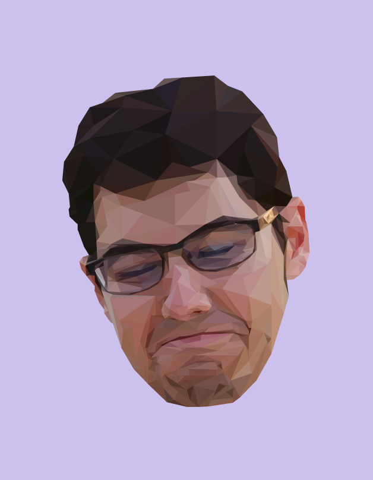

Vector Illustrations
Graphic DesignTools Used
- Illustrator
- Pen tool
Overview
Every once in a while I like to make my friends uncomfortable by making artwork of their faces.
Inspired by Mike Wrobel's freakin' awesome vector illustrations (particularly the Game of Thrones art!!)

Also inspired by Mike Wrobel's work

Of course I had to try the low-poly portrait craze on my friend's disembodied head...
Of course I had to try the low-poly portrait craze on my friend's disembodied head...